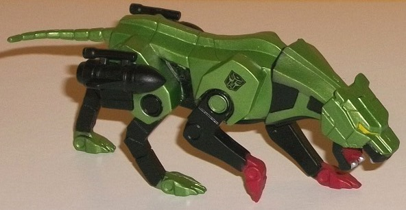

Allegiance : G.I.JOE
Color Scheme : Bright pea green, moderately dark bluish green, fleshy tan, and some black, metallic bronze, silver, red, white, yellow, gray, and orange

 "Ninja
Force" G.I.JOE/TF Crossover Set (2017 Transformers Club/GIJOE Club Joint
Exclusive)
"Ninja
Force" G.I.JOE/TF Crossover Set (2017 Transformers Club/GIJOE Club Joint
Exclusive)
Price (in addition to membership)
:
$129 (U.S.)
 Ninja
Force Scarlett
Ninja
Force Scarlett
Allegiance
: G.I.JOE
Color Scheme
: Bright pea green,
moderately dark bluish green, fleshy tan, and some black, metallic bronze,
silver, red, white, yellow, gray, and orange
Given that the main title of and emphasis of this set is "NINJA FORCE", it's odd that this is the only actual Ninja Force toy in the set. Regardless, this is apparently an homage to an early '90s JOE gimmick, hence the BRIGHT pea green on Scarlett's upper legs and lower arms. As the main contrast color, she's got a dark bluish green, and they do certainly work together fairly well-- they both complement and contrast against each other nicely, plus there's the whole green "military theme" anyways. She's also got a fair amount of black-- not just on her boots and sword sheathes, but on lines around her waist and shoulders, probably to make it look like she's wearing extra protective padding there. She's also got some really nice metallic bronze on her ridged shoulder armor. For her hair, she's got a pretty straightforward orange, which looks SLIGHTLY off for a redhead-- it should've had a slight reddish tint to it, or been a little darker or something. Her face is painted marvelously well, though, with the eyes and pupils painted perfectly, along with red lips and thin orange eyebrows. As far as weapons, Ninja Force Scarlett is armed TO THE TEETH-- she has two swords with silver-painted blades, a set of yellow nunchucks (connected by a black string), and two Wolverine-like claw attachments you can slide her hands into. So, don't make her mad, folks. She has the standard JOE figure articulation-- she can move at the neck, shoulders (at two points), elbows (at two points), wrist and mid-body rotation, and movement at the hips, knees (at two points), and ankles (at two points). In case you're wondering why I didn't give her a rating-- I'm not experienced enough with JOE figures, given that I only own the ones in this set and in the Old Snake/B.A.T. drones set , so I'm gonna leave that kinda thing to people who are more familiar with this line.
Cobra
Commander
Allegiance
: Cobra/Decepticon
Color Scheme
: Dark semi-metallic
navy blue, silver, and some black, dark red, metallic bronze, fleshy tan,
and white
I'll be honest, I'm not sure why Cobra Commander is in this set. He doesn't look like some unique version of the character, like the Megatron "hologram" toy. I'll be the first to claim I'm not familiar with the G.I.JOE toyline, but surely there's tons of versions of Cobra Commander that look pretty much like this already? Anyways, regardless of how unique this version is or not, he's got the best color scheme of the JOE figures in this set. The main plastic color of a dark navy blue is enhanced by having a bit of glitter in it, so it looks semi-metallic. It's a pretty darned nice main color, and it's enhanced by all the silver paint on him; the buttons, the shoulder pads, the straps around his gun and sword holsters... it's all quite intricately detailed and impressive. There's also a bit of metallic bronze on the buckles on his various straps, which is a nice accent color. There's also some black on the boots and gloves and handgun, as expected. His sword has white on the handle, which seems a little odd, but okay, I guess. There's some red on his belt buckle and on his medals and COBRA insignias on his chest and head. The thing is, the red is too dark-- it doesn't show up enough against the dark blue, which is unfortunate. One impressive thing, though, is that even at this size, the eyes are perfectly painted inside their little eye holes, with black pupils, white eyes, and a little bit of tan flesh paint around them. As one final little nod, he's got a G1 Megatron gun for an accessory. As for articulation, Cobra Commander's like the other JOE figures--he can move at the neck, shoulders (at two points), elbows (at two points), wrist and mid-body rotation, and movement at the hips, knees (at two points), and ankles (at two points).
Dr.
Sidney Biggles-Jones

Allegiance
: Cobra/Decepticon
Color Scheme
: White, moderately
dark blue, dark brownish red, and some black, dark flat brown, dark red,
milky gold, and fleshy tan
Well, you have to give Dr. Sidney Biggles-Jones some credit; she doesnt have an awesome codename, but darnit, she's gonna wear combat tights anyway. And a LAB COAT around her tights, too, so you know she's a doctor! Joking aside, the white lab coat is an accessory that can be slid up or down the arms on the figure and is removable, though the plastic isn't quite flexible enough for me to feel comfortable doing so. Her upper sleeves are also white, while her main body is your usual cobra blue on the main body and waist (with a dark red COBRA insignia above the heart-- again, not quite light enough to really show against the blue), with a brownish red used for her legs and black boots. There's some brown pouches and straps around her waist and hips, holding science stuff, I guess-- it all looks okay, but color-wise she's my least favorite of the JOE figures in this set. Her head is quite intricately-painted, though, with dark brown hair in a ponytail (complete with a blue "scrunchie"), red lips, perfectly-painted eyes, and even little brown eyebrows-- again, quite impressive paint apps, there. For weaponry, she has a milky gold futuristic-looking gun, which she can hold alright but unfortunately can't store anywhere. As expected, she has the standard JOE articulation-- at the neck, shoulders (at two points), elbows (at two points), wrist and mid-body rotation, and movement at the hips, knees (at two points), and ankles (at two points).
 Black
Cat
Black
Cat

Allegiance
: Autobot
Color Scheme
: Black, metallic bluish
green, and some moderately dark red, silver, and yellow
Individual Rating
: 3.0
Black Cat is a bit of
an odd accessory, here; he's not a normal Transformer toy, but rather a
redeco of a SDCC-exclusive Ravage figure (that version came with a chain
and collar and Baroness figure; this one does not). He's an extremely obscure
character, from only one issue of a TF Comic Magazine. His color scheme
is pretty accurate with his very minimal appearance; he's mostly a metallic
bluish green, which is a really nice shade and contrasts against the black
plastic on his lower legs, rocket launchers, and bits of his neck, stomach,
and jaws. There's also some red on the front paws and mouth, silver on
the fangs, and yellow on the eyes. It's a decent color scheme overall,
but not eye-popping. My main issue is that this is essentially a plastic
statue, not a transforming toy-- he has a ball joint at the base of the
neck, but that's it as far as articulation goes. For expensive FunPub prices,
I wanted more, I'm not gonna lie.
 Toaster
Toaster
Allegiance
: Autobot
Color Scheme
: Light pale purple
and some black, light pea green, and light pale tan
Individual Rating
: 1.9
Toaster is another accessory
redecoed fron a Joe-scaled SDCC exclusive of Blaster. Like with Black Cat,
it's non-transforming, and is just a little cassette player. Toaster was
originally briefly depicted in a few TF comics as a Transformer with the
alt mode of a.. toaster! (Bet you didn't see that one coming.) Anyways,
his main color is a really nice light purple, almost lavender, with a bit
of black on the handle and speakers. The light green in the center is another
nice color-- purple and green almost always go together well. What's pretty
funny about Toaster, though, is that this mold's little cassettes (which
actually have the detailing on them each that show the "cracks" in the
cassette modes like with the original G1 toys) are colored pretty much
the exact color of Pop-Tarts or toast. He can't store any more than one
of them at a time, though. Again though, like with Black Cat, he's just
a little non-transformable accessory that JOE figures can hold via a peg
in the middle of the back, and isn't something I wanted at FunPub prices.
Ratbat

Allegiance
: Decepticon/Cobra
Difficulty of Transformation
: Easy
Color Scheme
: Dull violet, dull
chalky periwinkle, and some yellow, black and dark dull purple
Individual Rating
: 9.0
This version of Ratbat
is the Masterpiece mold, which is a special treat for U.S. fans since this
mold was originally only available if you ordered the Japanese-exclusive
Masterpiece Soundblaster. (So yes, this toy can fit inside
Masterpiece
Soundwave's
chest cavity.) This version still has Ratbat's general
G1 color scheme, but dulled and changed slightly to better replicate his
coloring in the old Marvel comics. The main plastic color is a fairly dull
violet, with the main complementary color being a dull periwinkle. These
two colors complement and contrast against each other quite well-- and
of course are accurate to the comics-- though purely from a visual standpoint,
I wish the periwinkle was a bit brighter to stand out a bit more. In cassette
mode, there's also some black lines around the edges and in the center
to "mark off" the actual "center" of the cassette, just like with most
of the other MP cassettes. Also like with most of the MP cassettes, there's
horizontal lines across the center that become a solid paint app near the
bottom half or so of this mode-- on Ratbat, it's a dark dull purple, which
is also lined around the edges of this mode. It's a decent color by itself,
and complements the violet alright, but again, I wish it was just a bit
lighter. As far as the cassette mode proportions themselves, they're pretty
much perfect on the front. On the back it's more "cassette-shaped" with
the mold detailing of panels, tubes, and the like molded in for the various
beast mode parts, but there aren't details like the back of an actual cassette
tape. Still, it all folds up very nicely, with the only obvious beast bits
in the back being the edges of the wing pieces and perhaps the back of
Ratbat's head in the center of the mode. Generally VERY minimal negatives,
even if you're picky.
Ratbat's bat mode is
mostly a simple unfolding of his cassette mode-- largely self-explanatory.
It definitely takes its looks a bit more from the comics not just from
a color perspective, but from the perspective of the mold, too. The bat
head has the exact perfect expression on it, looking pretty much exactly
like Ratbat did in the comics, with a hint of intelligence in his menacing
robotic bat visage. His legs are laughably tiny, but then again they always
have been. The wings are long but fairly skinny compared to bats-- but
again, G1-accurate. They unfortunately can only move up-and-down at two
points and slightly back-and-forth at the midpoint of the wings, both primarily
because of his transformation, so he can't flap them like normal wings,
unfortunately. My biggest positive about this mode is that it takes the
add-on weapons of the original G1 toy and makes them part of the transformation
and core figure, so Ratbat does indeed have a jetpack on his back! With
that and the tiny feet, he can stand up pretty solidly in this mode. The
colors are mostly the same as in cassette mode, but with more periwinkle
to give some more contrast, which I appreciate. The eyes are also painted
a nice yellow. Like with the original G1 toy, the front is actually fairly
smooth in terms of mold detailing, but the back of the wings has an impressive
amount of mold detailing, with pistons, armor "shards", and the like molded
in everywhere. It should be noted that because he comes by himself and
not with Soundwave, Ratbat does NOT come with a little see-through "case"
for his cassette mode like the other MP cassettes.
Megatron
(G2 "Hologram")
Allegiance
: Decepticon (Generation
2)
Difficulty of Transformation
: Easy
Color Scheme
: Light milky gray,
translucent forest green, and some silver, dark flat purple, moderately
dark red, dull grayish blue, glossy black, and periwinkle
Individual Rating
: 8.2
(NOTE: Because this is a repaint, this is not a full-blown review. This mainly covers any changes made to the mold and the color scheme, and merely compares it to "Thrilling 30th" Legends Megatron. For a review on the mold itself, read the review of "Thrilling 30th" Legends Megatron here .)
This redeco of Megatron
is meant to be his initial G2 version which is a sensibly green-and-gray
tank with-- of course-- purple camo. Because of all that purple in natural
environments for him to hide in. Ahhh, G2 logic, I miss you. Anyways, the
main plastic color is a really nice transparent forest green on this version.
The light really bounces off of it quite well, though the dark dull purple
is a bit TOO dull, to the point where it doesn't stand out enough against
the green unless the light is right behind said green. The reason WHY he's
mostly transparent plastic is because he's meant to be a hologram design
(this also explains his small size compared to the rest of the toys in
the set), and not the "real deal", which is a nice way for FunPub to hedge
its bets in case this mold is ever done one day in "regular" G2 colors.
Unfortunately there's a fair amount of that super bland light milky gray
plastic, used on Megatron's "unpaintable" plastic parts like the upper
arms and legs, as well as the turret. It's fairly accurate to the source
material, but that doesn't make it look any better. Megatron's face is
painted extremely well, with a silver helmet, a periwinkle face (love ya,
G2!), and red eyes. It looks pretty unique among Megatron faces, despite
having the "same ol'" headsculpt. There's also a bland bluish gray paint
app around his waist, which looks alright and is CERTAINLY better than
the light milky gray, but I wish it was a bit brighter-- say periwinkle--
for better contrast.
No mold changes have
been made to G2 "Hologram" Megatron.
Like with the other shared
GIJOE/TF Club exclusive sets, this set will appear more to JOE fans than
Transformers fans. JOE fans get three full, extremely well-painted figures,
with two JOE-scaled TF accessories. Transformers fans get two small Transformers
toys which are decent, but not worth the expensive price of this set by
themselves by any stretch of the imagination (though the inclusion of a
previously Japan-only mold was a nice choice). Black Cat and Toaster are
honestly wastes, and should have been replaced with another transforming
Transformer toy to help "even out" the set a bit more. Only recommended
if you're a big fan of
both
franchises; most TF fans can probably
skip this set, especially given the expensive price (even for a FunPub
exclusive).
Reviews by Beastbot